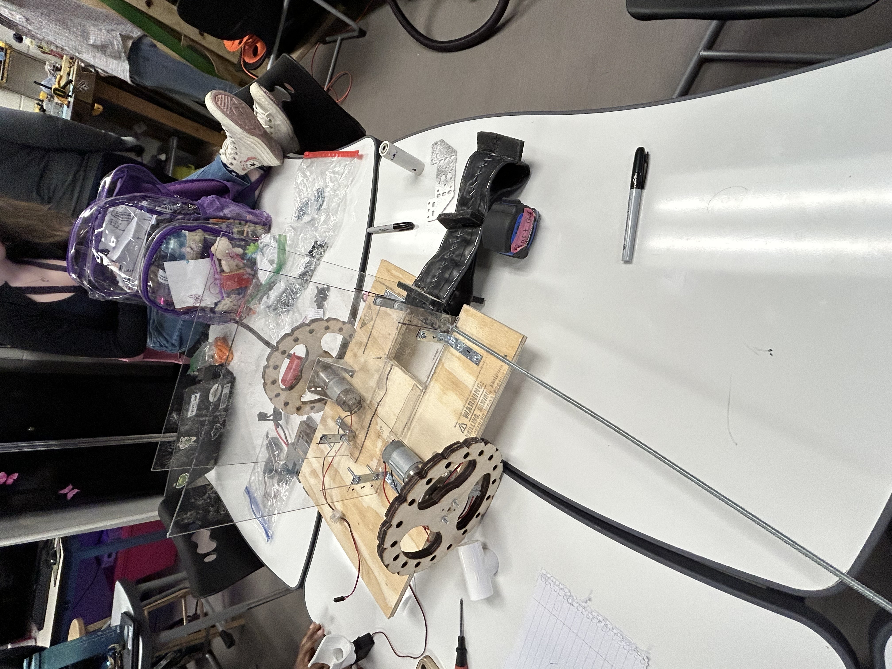
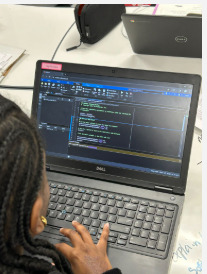
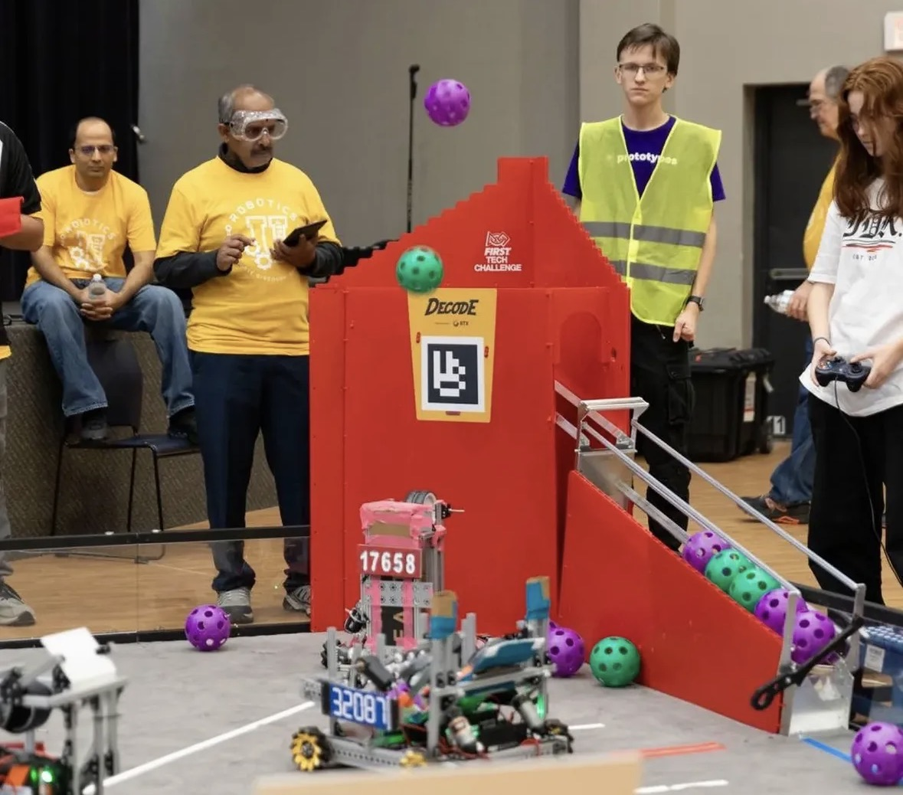

KHS Robotics is a student-led team dedicated to engineering, programming, innovation, and teamwork. Our members design, build, and program robots while developing technical skills and real-world problem-solving abilities.
KHS Robotics began as a small team with limited resources and an uncertain future. In the early years, the team experienced several coaching changes and had very little funding, making it challenging to build a strong foundation.
Despite these obstacles, the dedication of our students, mentors, and supporters helped the team continue to grow. With the support of French and many committed team members, KHS Robotics expanded its resources, strengthened its knowledge, and developed into a more capable robotics program.
Today, our team continues to build on that foundation. Every season brings new opportunities to learn, innovate, and improve as we compete in FIRST Tech Challenge (FTC) and Cowtown BEST Robotics.
Our team competes in FIRST Tech Challenge (FTC) and Cowtown BEST Robotics. Through these competitions, we challenge ourselves to create innovative robot designs, improve our engineering skills, and work together as a team.
Our team works on many different areas of robotics, including mechanical design, programming, building, testing, outreach, and documentation. Every member contributes to helping our team grow and succeed.
At KHS Robotics, we value innovation, teamwork, creativity, and continuous improvement. We believe every challenge is an opportunity to learn, grow, and create something better together.


